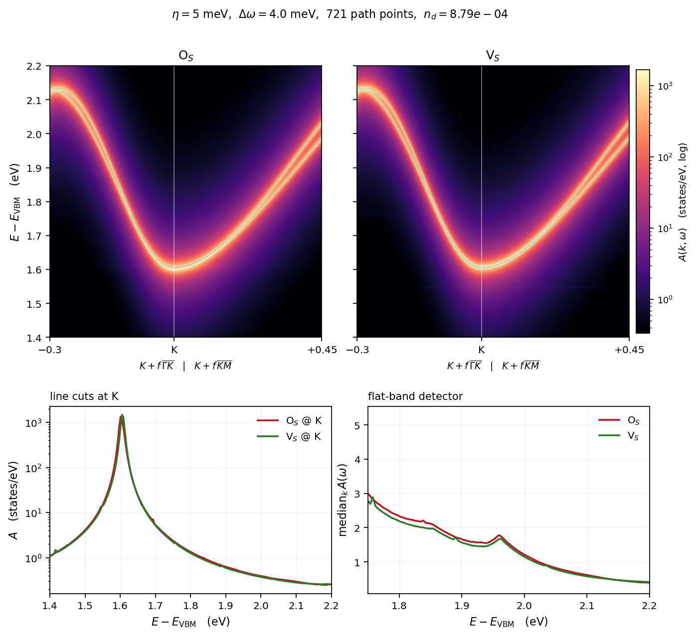
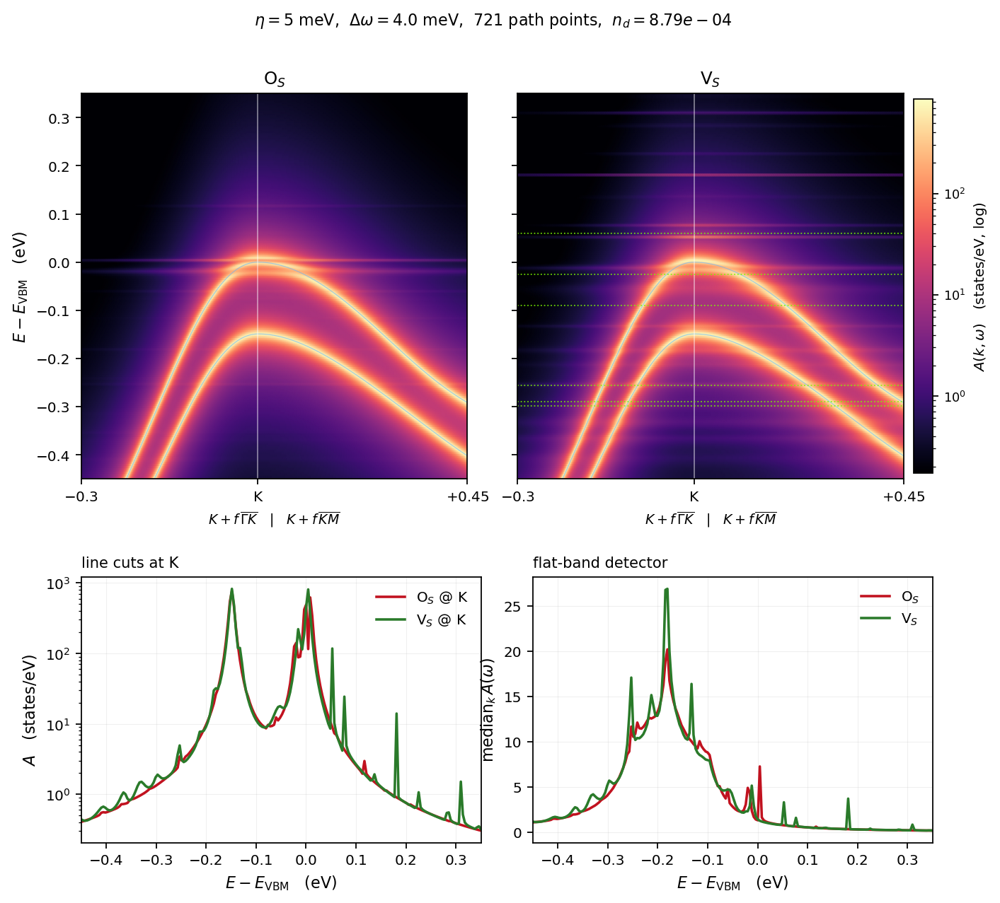
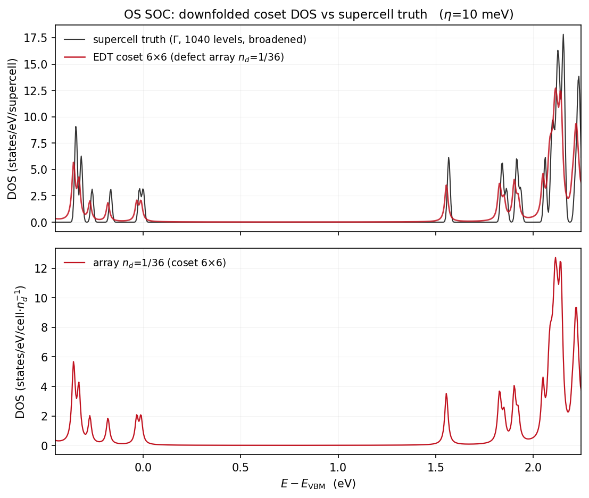
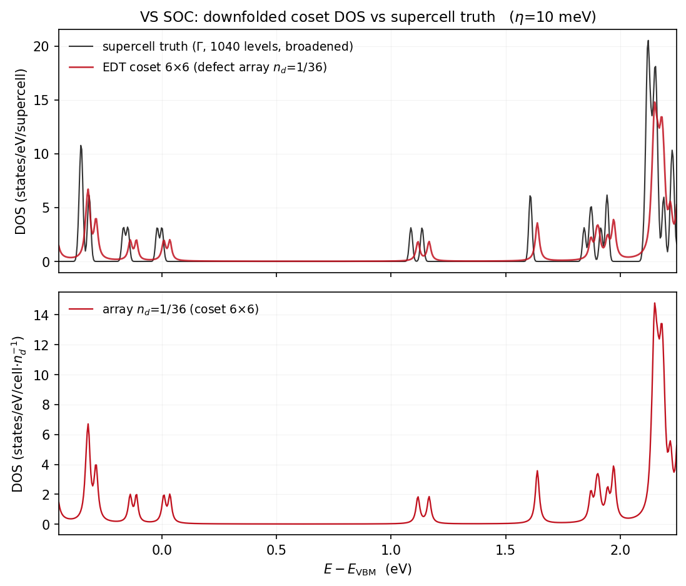

Contents
0. 摘要
首批含自旋轨道耦合的电子-缺陷谱函数 $A(k,\omega)$:MoS$_2$ 单层,O$_\mathrm{S}$ 与 V$_\mathrm{S}$(弛豫几何),12×12 粗网格、10 旋量带活性流形(带 25–34:1 对 VB + 4 对 CB), $n_d = 10^{12}\,\mathrm{cm^{-2}}$、$\eta=5$ meV、KZOOM 路径($K-0.3\,\overline{\Gamma K} \to K+0.45\,\overline{KM}$,721 点)、$N_f=1200$。CBM 窗直接呈现传导带 SOC 双线 (K 点劈裂 3.0 meV,沿 $K\to M$ 张开);VBM 窗呈现 149 meV 的 K 点价带自旋劈裂与 其间的缺陷平带多重态。Se$_\mathrm{S}$ 链完成后补齐三缺陷版本。
1. 图


VBM 图中 V$_\mathrm{S}$ 面板的绿色虚线为标量(非 SOC)超胞真值能级,直接对照 SOC 对间隙缺陷能级的重排与劈裂。
2. 平带探测器读数(局域缺陷特征,$E-E_\mathrm{VBM}$/eV)
| 窗口 | O$_\mathrm{S}$ | V$_\mathrm{S}$ |
|---|---|---|
| CBM | +1.694 | +1.702, +1.758(双特征,间距 ~56 meV) |
| VBM | −0.253, −0.241, −0.217, −0.181, −0.116, −0.060, −0.020, +0.004 | −0.329, −0.297, −0.253, −0.241, −0.213, −0.181, −0.132, −0.060, −0.012, +0.053, +0.181(深入间隙) |
标量 V$_\mathrm{S}$ 的六个真值能级(−0.298…+0.060)与 SOC 多重态同域——SOC 把每个 轨道能级按总角动量结构劈裂/重排,V$_\mathrm{S}$ 间隙侧新增 +0.181 eV 平带。
3. 计算路径(本批)
- born $M_{AA}$:EDI-direct v8d(带轴转置修复后,与 EDT 跨码闭环 1e-14 认证), 144×144 k 对全 40 带,5m36s;
- MODE C 链:EDT r11(A2A 分批转置手术,6×6 逐位回归)/Anvil highmem 单节点 16 pool×3 线程,n_reorth=1(0.000000 meV 判决)、col_chunk=1,~45 min/步 × 16 步; 链启动 unit test = 每次生产的跨码闭环(O$_\mathrm{S}$ 2.730e-11、V$_\mathrm{S}$ 2.547e-11);
- 10 旋量带 Wannier:soc40 宿主带 25–34 为全局隔离群(与 24/35 带净隙 6.5 meV/0.56 eV), 无需 disentanglement;w90 3.1 写盘崩溃经 chk 直提 + restart=plot 恢复(u.mat 幺正 1.9e-10);
- T 缓存:Koster–Slater 簇(RCUT=4,61 胞,dim 610),10 带下每窗仅 ~5 分钟 (11 带标量生产为 2–3.5h)——Banff 4 节点四窗并行完成;
- 宿主:100 Ry(60 Ry 复核:劈裂 ≤0.03 meV 但绝对能级 7.32 meV 超 5 meV 门)。
4. 超胞真值闸门:陪集 DOS 对账(已完成)
陪集分解使 6×6-陪集的下折叠问题严格等价于周期缺陷阵列 = SOC 超胞。用 socsup 的 超胞本征值(各 1040 条,O$_\mathrm{S}$ VBM=第 936 态、V$_\mathrm{S}$ 第 930 态) 直接对账:


流形宽度仲裁(同一宿主、同一 edmat,唯一变量 = active 窗口):
| V$_\mathrm{S}$ 深间隙双重态 | 10 带 | 22 带 | 超胞真值 |
|---|---|---|---|
| 位置 (eV) | ~0.93/1.0(偏 ~150 meV) | +1.118/+1.166 | 1.086/~1.15 |
| 间隙杂散峰 | 0.18–0.73 一串假峰 | 无 | 无 |
| O$_\mathrm{S}$ CB 起点 | +1.538(差 28 meV) | +1.554(差 12 meV) | +1.566 |
结论与分工:V$_\mathrm{S}$ 空位深态带强 S-p 特征,Mo-d 主导的 10 带流形张不开它 (非 SOC 时"5 带败给 11 带"的教训在 SOC 重演)。10 带适用于带边 K 谷 zoom (本页 §1 图定性可靠、快 30×);深间隙/真值级定量必须 22 带。22 带残差 ~20–40 meV 源于 N$_S$=16 链截断,可按需加深。
5. 待办
- Se$_\mathrm{S}$ SOC 链(在跑)→ 三缺陷版 zoom + 其真值对账;
- 带边 zoom 的 22 带复核(判定 10 带在 K 谷窗口的定量误差);
- 10 带留一法插值误差(Wannier 质量关)。